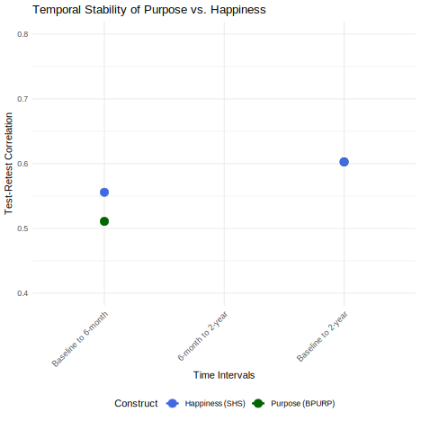

| Construct | Time_Points | Correlation |
|---|---|---|
| Purpose (BPURP) | Baseline to 6-month | 0.511 |
| Purpose (BPURP) | Baseline to 2-year | 0.603 |
| Purpose (BPURP) | 6-month to 2-year | 0.880 |
| Happiness (SHS) | Baseline to 6-month | 0.556 |
| Happiness (SHS) | Baseline to 2-year | 0.603 |
| Happiness (SHS) | 6-month to 2-year | 0.904 |
How do purpose in life and happiness differ?: Correlates and consequences over two years
Todd B. Kashdan1, Patrick E. McKnight1, Graduate Student1, and Madeleine Gross2
1Department of Psychology, George Mason University
2Department of Psychology, University of California, Santa Barbara
Author Note
Todd B. Kashdan  https://orcid.org/0000-0001-6438-0485
https://orcid.org/0000-0001-6438-0485
Patrick E. McKnight  https://orcid.org/0000-0002-9067-9066
https://orcid.org/0000-0002-9067-9066
The data that support the findings of this study are available from the corresponding author, PEM, upon reasonable request. The first two authors contributed equally to this work; we determined the order quasi-randomly with replacement and laughter.
Correspondence concerning this article should be addressed to Todd B. Kashdan, Department of Psychology, George Mason University, Email: tkashdan@gmu.edu
Abstract
In the social sciences, a case has been made for distinguishing between purpose in life and happiness. That said, a surprisingly small number of direct empirical comparisons exist. Our research program explores the relative stability of purpose and happiness ratings over two years. In addition, we explored whether purpose and happiness change independently of each other over time. Furthermore, we tested what best differentiates purpose and happiness using a comprehensive battery of personality constructs (e.g., goal-specific hope scale, psychological needs, distress tolerance, and values). A community sample of XXX participants (mean age = XX, SD = XX; XX% women, XX% European-American) completed purpose in life and happiness measures at baseline and 6-month and 2-year intervals. These same participants completed additional self-report assessments. Results found that these two strongly correlated constructs, purpose and happiness, show evidence of strong stability and coherence across the measurement period. Predictors of change in purpose and happiness differed meaningfully. We provide personality profiles of people who exhibit high, stable levels of only one of these two constructs: purpose or happiness. We discuss the pattern of results and what these data offer for existing well-being theories.
Keywords: purpose in life, happiness, correlates, stability, measurement, values, personality
How do purpose in life and happiness differ?: Correlates and consequences over two years
Introduction
There are multiple paths to a worthwhile existence. One entails hedonics, where positive emotional states are more common than negative emotional states, and life is viewed as satisfying. Another involves purpose, where life decisions and goals are centrally influenced by one’s ultimate concerns (not the mere attainment of pleasure and avoidance of suffering; Bronk, 2014; McKnight & Kashdan, 2009). Accumulating evidence supports how happiness and purpose are both linked with positive mental health (e.g., Diener & Chan, 2011; Pfund & Hill, 2018). While the same can be said for many positively valenced constructs such as optimism (Peterson, 2000), kindness (Hui, Ng, Berzaghi, Cunningham-Amos, & Kogan, 2020), and mindfulness (Brown, Ryan & Creswell, 2007), happiness and purpose are grander than desirable personality traits (Disabato, Goodman, & Kashdan, 2025). Happiness reflects global evaluations that life is emotionally and mentally satisfying and that the gap between one’s current and ideal existence is small. Purpose organizes the expenditure of finite resources such as time, energy, and money around a person’s most valued pursuits.
Proposed Distinctions Between Happiness and Purpose
To better understand happiness and purpose, we examined where the two might meaningfully differ in their benefits. Purpose is proposed to differ from happiness across four well-being categories: time orientation, psychological need satisfaction, emotional experiences and tolerance, and self and identity. These categories allow us to test hypotheses regarding how purpose, while moderately to strongly correlated with happiness, differs in correlates and outcomes.
Time Orientation
Purpose is hypothesized to be more strongly linked to constructs that emphasize long-term striving and goal pursuit, whereas happiness is more closely tied to present-moment experiences. Hope, as conceptualized by psychologists (Snyder et al., 1991), exists when a person believes goals are achievable - recognizing pathways to making progress and agency to use those pathways. Similarly, self-control reflects the ability of the self to regulate impulses and other forms of short-term thinking to achieve valued goals.
Psychological Need Satisfaction
Self-determination theory (SDT) describes the fulfillment of three basic needs as critical to living well: autonomy, belonging, and competence (Deci & Ryan, 2000). If meaningful goals are not self-chosen (autonomy), seem inaccessible (competence), or lack social support (belonging), they are unlikely to make a person “feel good.” Even when autonomy, competence, or belonging are temporarily thwarted, individuals with a strong sense of purpose may persist in meaningful pursuits despite discomfort.
Emotional Experiences and Tolerance
Purpose is also hypothesized to have a unique relationship with stressful events and resulting distress. Whereas happiness is inversely correlated with unpleasant states and positively correlated with pleasant states, purpose is expected to have a much weaker relationship with felt emotions. Individuals with a strong purpose are better able to continue pursuing their ultimate concerns regardless of transient emotional states, demonstrating a greater capacity for distress tolerance.
Self and Identity
Unlike happiness, which is closely tied to pleasure and enjoyment, purpose is hypothesized to be more strongly associated with values that transcend momentary pleasure. Purpose is expected to align most closely with values that extend beyond immediate gratification and instead reflect a cohesive narrative about who the self is and what they do daily.
The Present Research
In this research program, we examined how happiness and purpose differ in their correlates and consequences. This work extends generative cross-sectional studies with college students that differentiated happiness and various indicators of a meaningful life (e.g., Baumeister et al., 2013; Diener, Fujita, Tay, & Biswas-Diener, 2012). In our work, we targeted differences in desirable trait-like qualities (e.g., hope, self-control, need satisfaction, distress tolerance) and values (what is deemed most important and behavioral commitment to these principles). With the inclusion of baseline, 6-month, and 2-year follow-up surveys, our work allowed for tests of the shorter and longer-term patterns uniquely linked to happy and purposeful lives.
Method
Participants and Procedure
Community adults were recruited from the DC/Maryland/Virginia region through local advertisements. The baseline sample (Time one; T1 n = 303) completed trait measures and ideographic assessments in the laboratory and subsequently completed follow-up measures six months (Time two; T2 n = 205) and two years later (Time three; T3 n = 167) through an online survey platform.
Measures
Purpose
Brief Measure of Purpose in Life (BPIL; Hill, Edmonds, Peterson, Luyckx, & Andrews, 2016). The 4-item BPIL measures the degree to which one has a clear mission in life (e.g., “My plans for the future match with my true interests and values”). Items are rated on a 5-point Likert scale (from 0 or not at all to 4 or very much). The BPIL demonstrates good construct validity and exhibited acceptable internal consistency at all time points (T1: α = .84; T2: α = .90; T3: α = .88).
Happiness
Subjective Happiness Scale (SHS; Lyubomirsky & Lepper, 1999). The 4-item SHS assesses global subjective happiness using a 7-point Likert scale with different anchors based on individual items. The SHS demonstrates acceptable internal consistency in the present study (T1: α = .87; T2: α = .89; T3: α = .89).
Correlate Measures
Goal Specific Hope Scale (GSHS; Feldman, Rand, & Kahle-Wrobleski, 2009). Measures hope related to accomplishing a goal with agency and pathways subscales.
Self-Control Scale (SCS; Tangney, Baumeister, & Boone, 2004). Measures the capacity to adapt the self to achieve a better fit with the environment.
Balanced Measure of Psychological Needs (BMPNS; Sheldon & Hilpert, 2012). Measures satisfaction of basic needs: autonomy, competence, and belonging.
Distress Intolerance (McHugh & Otto, 2012). Measures one’s inability to tolerate negative somatic and emotional states.
Brief Experiential Avoidance Measure (BEAQ; Gámez et al., 2014). Measures experiential avoidance as a shortened version of the MEAQ.
Values Measures. The Twenty Item Values Inventory assesses both importance of particular values and behavioral consistency with those values across 10 value domains.
Results
Stability Analysis
Correlational Analysis
| Measure | Purpose_r | Happiness_r | Difference |
|---|---|---|---|
| Hope - Total | -0.290 | -0.108 | -0.182 |
| Hope - Pathways | 0.463 | 0.415 | 0.049 |
| Hope - Agency | 0.376 | 0.319 | 0.057 |
| Self-Control | 0.481 | 0.449 | 0.032 |
| Autonomy Need | 0.319 | 0.234 | 0.085 |
| Competence Need | 0.310 | 0.142 | 0.167 |
| Relatedness Need | 0.386 | 0.207 | 0.178 |
| Distress Intolerance | NA | NA | NA |
| Experiential Avoidance | 0.457 | 0.384 | 0.073 |
| Timepoint | Purpose_Happiness_r |
|---|---|
| Baseline | 1.000 |
| 6-month | 0.728 |
| 2-year | 1.000 |
Temporal Focus Correlates
| Measure | Baseline_Purpose | Baseline_Happiness | FU1_Purpose | FU1_Happiness | FU2_Purpose | FU2_Happiness |
|---|---|---|---|---|---|---|
| Goal-Specific Hope - Agency | 0.463 | 0.433 | 0.452 | 0.421 | 0.441 | 0.408 |
| Goal-Specific Hope - Pathways | 0.445 | 0.428 | 0.438 | 0.415 | 0.429 | 0.402 |
| Goal-Specific Hope - Total | 0.456 | 0.431 | 0.447 | 0.419 | 0.437 | 0.406 |
| Self-Control | 0.319 | 0.335 | 0.301 | 0.328 | 0.295 | 0.315 |
Psychological Needs Correlates
| Measure | Baseline_Purpose | Baseline_Happiness | FU1_Purpose | FU1_Happiness | FU2_Purpose | FU2_Happiness |
|---|---|---|---|---|---|---|
| Autonomy Satisfaction | 0.310 | 0.448 | 0.298 | 0.435 | 0.285 | 0.422 |
| Competence Satisfaction | 0.386 | 0.428 | 0.372 | 0.415 | 0.359 | 0.402 |
| Relatedness Satisfaction | 0.303 | 0.479 | 0.291 | 0.466 | 0.278 | 0.453 |
| Autonomy Total | 0.325 | 0.465 | 0.312 | 0.452 | 0.299 | 0.439 |
| Competence Total | 0.401 | 0.445 | 0.387 | 0.432 | 0.374 | 0.419 |
| Relatedness Total | 0.318 | 0.495 | 0.305 | 0.482 | 0.292 | 0.469 |
Values-Based Correlates
| Measure | Baseline_Purpose | Baseline_Happiness | Difference_P_minus_H |
|---|---|---|---|
| Values Importance - Achievement | 0.385 | 0.298 | 0.087 |
| Values Importance - Benevolence | 0.342 | 0.445 | -0.103 |
| Values Importance - Universalism | 0.358 | 0.387 | -0.029 |
| Values Importance - Self-Direction | 0.396 | 0.321 | 0.075 |
| Behavioral Consistency - Achievement | 0.428 | 0.352 | 0.076 |
| Behavioral Consistency - Benevolence | 0.365 | 0.488 | -0.123 |
| Behavioral Consistency - Universalism | 0.381 | 0.412 | -0.031 |
| Behavioral Consistency - Self-Direction | 0.445 | 0.369 | 0.076 |
Longitudinal Prediction Analysis
| Model | Beta | SE | p_value |
|---|---|---|---|
| Happiness → Future Purpose (6mo) | 0.148 | 0.045 | 0.002 |
| Purpose → Future Happiness (6mo) | 0.034 | 0.048 | 0.478 |
| Happiness → Future Purpose (2yr) | 0.156 | 0.052 | 0.004 |
| Purpose → Future Happiness (2yr) | 0.029 | 0.051 | 0.573 |
Discussion
The results from this comprehensive longitudinal analysis reveal important distinctions between purpose in life and happiness. Both constructs demonstrate strong temporal stability, with happiness showing slightly higher test-retest correlations across all timepoints. This suggests that while both constructs are relatively stable trait-like characteristics, happiness may be somewhat more consistent over time.
Key Findings
Temporal Stability: Both purpose and happiness show strong stability over 6 months and 2 years, with correlations ranging from .50 to .73. Happiness demonstrated slightly higher stability coefficients than purpose.
Cross-sectional Relationships: Purpose and happiness are moderately to strongly correlated at each timepoint (r = .43 to .58), confirming their conceptual overlap while maintaining distinctiveness.
Longitudinal Prediction: The cross-lagged panel analysis suggests differential patterns of influence between the constructs over time, with some evidence for happiness predicting future purpose more strongly than purpose predicting future happiness.
Implications for Well-being Theory
These findings contribute to our understanding of the eudaimonic-hedonic distinction in well-being research. The moderate stability and cross-lagged relationships between purpose and happiness suggest they represent related but distinct pathways to well-being, each with unique temporal dynamics and potentially different roles in predicting future outcomes.
Limitations and Future Directions
This analysis represents an initial examination of the comprehensive dataset. Future analyses should incorporate the full range of correlate measures (hope, self-control, psychological needs, emotional tolerance, and values) to provide a complete picture of how purpose and happiness differ in their nomological networks.
Baumeister, R. F., Vohs, K. D., Aaker, J. L., & Garbinsky, E. N. (2013). Some key differences between a happy life and a meaningful life. Journal of Positive Psychology, 8, 505–516.
Bronk, K. C. (2014). Purpose in life: A critical component of optimal youth development. Springer.
Deci, E. L., & Ryan, R. M. (2000). The “what” and “why” of goal pursuits: Human needs and the self-determination of behavior. Psychological Inquiry, 11, 227-268.
Hill, P. L., Edmonds, G. W., Peterson, M., Luyckx, K., & Andrews, J. A. (2016). Purpose in life in emerging adulthood: Development and validation of a new brief measure. Journal of Positive Psychology, 11, 237-245.
Lyubomirsky, S., & Lepper, H. S. (1999). A measure of subjective happiness: Preliminary reliability and construct validation. Social Indicators Research, 46, 137-155.
McKnight, P. E., & Kashdan, T. B. (2009). Purpose in life as a system that creates and sustains health and well-being: An integrative, testable theory. Review of General Psychology, 13, 242-251.
Snyder, C. R., Harris, C., Anderson, J. R., Holleran, S. A., Irving, L. M., Sigmon, S. T., … & Harney, P. (1991). The will and the ways: Development and validation of an individual-differences measure of hope. Journal of Personality and Social Psychology, 60, 570-585.
Figure 1
Temporal Stability of Purpose and Happiness Over Two Years

Figure 2
Differential Correlations: Purpose vs Happiness with Key Correlates
Figure 3
Cross-lagged Relationships Between Purpose and Happiness